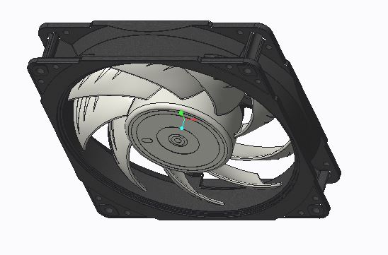
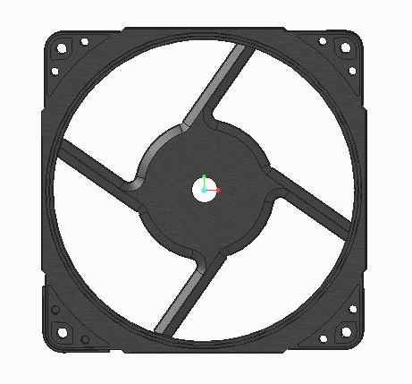
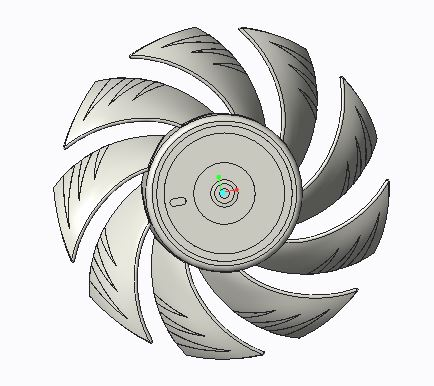

In this Computer Aided Design project, I created the design of a cooling fan assembly matching the manufacturer specifications.
The cooling fan assembly has multiple parts which are assembled together to form a single unit.
All the components in the assembly are made out of plastic.

The above image is the isometric view of the cooling fan assembly.
The assembly components can be screwed on together using standard screws available in the market.

The above image is the outer casing of the cooling fan assembly.
All CAD models of every component in the assembly are made to scale.

The above image is the rotary component of the cooling fan assembly.
All the components of the model can be easily converted into a high-fidelity prototype and a final manufacturing product using SLA or FDM printers.
The components can also be assembled together easily to test the fit and form of the assembly.
When a two phase brushless motor is connected to the rotary component with wiring, the product can be tested for its functional capability.